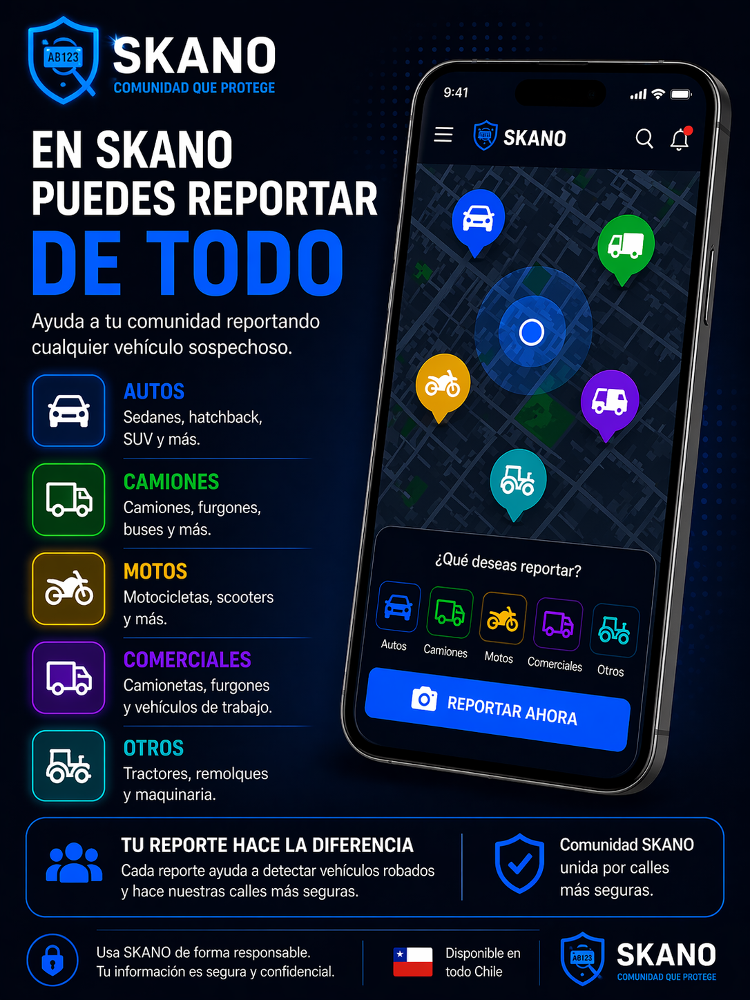
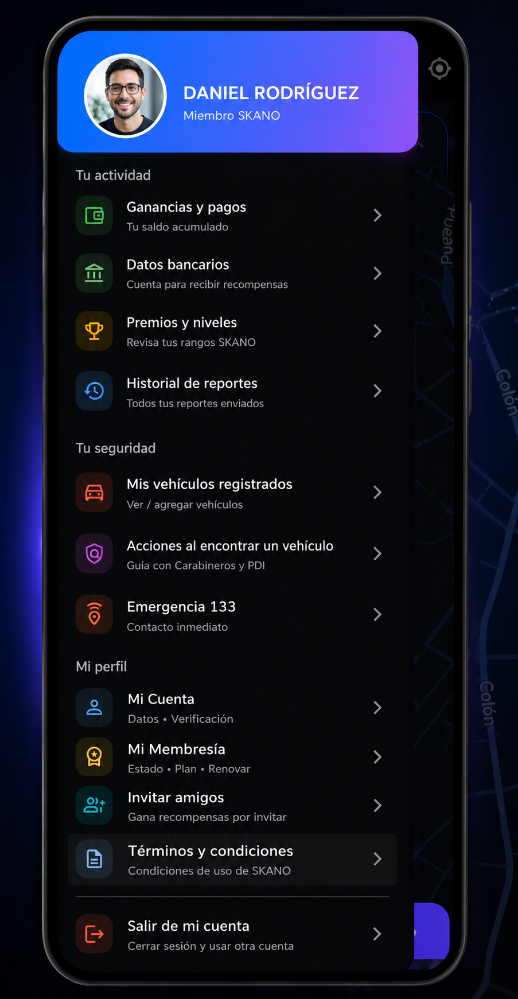

Búsqueda comunitaria Autos robados en Chile
Seguridad ciudadana · Tecnología · Comunidad
SKANO es una app en Chile para buscar autos robados, verificar patentes y reportar vehículos sospechosos en tiempo real. La comunidad ayuda a encontrar vehículos robados de forma segura mediante validación antifraude, PIN y selfie.
📱 Descargar app AndroidVista previa app SKANO


Alertas en tiempo real · Reportes verificados · Identidad protegida
Vehículos estacionados, calles reales, seguridad ciudadana y uso de la app: una experiencia visual pensada para mostrar que SKANO opera donde realmente ocurre la búsqueda.


SKANO es una plataforma tecnológica de seguridad ciudadana que conecta a la comunidad con dueños de vehículos robados o clonados, permitiendo reportes seguros, verificados y protegidos mediante tecnología antifraude y validación humana.
Cualquier persona puede reportar una patente sospechosa de forma gratuita. Para que un reporte sea válido, SKANO exige PIN, selfie en tiempo real y controles automáticos.
La identidad del reportante nunca es visible para el dueño del vehículo. SKANO actúa como intermediario seguro.
Los reportes válidos generan copas que se transforman en recompensas económicas. Compartir SKANO suma medallas.
Cada reporte válido exige un PIN personal y una selfie en tiempo real. Esto confirma que quien reporta es una persona real y evita bots, fraudes, automatizaciones y reportes falsos.
La ubicación se registra solo al momento exacto del reporte. SKANO no rastrea personas, no guarda recorridos y no hace seguimiento permanente.
El sistema detecta patrones sospechosos, abuso del sistema o intentos de manipulación. Las cuentas que incumplen las reglas se bloquean automáticamente.
El reportante nunca queda expuesto. El dueño del vehículo no recibe datos personales ni información identificable del usuario que reporta.
SKANO es una aplicación móvil que permite a la comunidad detectar, reportar y validar vehículos robados de forma segura, anónima y con recompensas reales.
Cualquier persona puede usar la app para reportar una patente sospechosa. Para que el reporte sea válido, la app solicita:
Esto evita fraudes, bots y reportes falsos.
SKANO utiliza controles automáticos y revisión interna para validar cada reporte antes de considerarlo legítimo.
Los reportes falsos o abusivos generan bloqueos automáticos de la cuenta.
Los dueños de vehículos y empresas con planes activos reciben alertas solo cuando un reporte es validado.
La identidad del reportante nunca se comparte.
Los reportes válidos generan copas que permiten acceder a recompensas económicas.
Además, compartir la app genera medallas por referidos con reportes verificados.
✔ SKANO no rastrea personas
✔ No controla ni bloquea vehículos
✔ Actúa como intermediario seguro entre la comunidad y los dueños
Un panel profesional para parquímetros y estacionamientos que permite
consultar patentes y recibir alertas verificadas
cuando un vehículo robado es detectado en tu recinto.
SKANO no entrega datos personales y no autoriza acciones directas:
el portal es informativo y opera con trazabilidad y control.
Ideal para operadores que necesitan una herramienta rápida, discreta y segura para detectar vehículos con encargo, sin exponerse y sin intervenir.
La operación puede ser manual (ingreso de patente) o
semi-automática (lector/cámara en etapa posterior).
El sistema está pensado para crecer por módulos, manteniendo el control antifraude.
Ingreso rápido de patente para verificar si existe un encargo activo en SKANO. Respuesta clara: Sin encargo o Vehículo con encargo.
El portal muestra alertas solo cuando existe un estado válido (encargo activo verificado). Esto reduce falsos positivos y evita abuso del sistema.
La ubicación se registra solo como referencia del recinto y el momento. SKANO no rastrea recorridos ni realiza seguimiento permanente.
La empresa administra accesos por rol. Operadores solo consultan y reciben alertas, sin permisos administrativos ni exportación masiva.
SKANO funciona como plataforma de apoyo con trazabilidad y control antifraude. No reemplaza denuncias ni procedimientos oficiales.
Para proteger a la comunidad y evitar fraudes, SKANO exige validación obligatoria de identidad y propiedad. Sin documentos válidos no existen reportes ni alertas.
Solo los usuarios correctamente validados pueden realizar reportes y acceder a recompensas.
Validan que la persona es real, responsable y trazable.
La identidad del usuario nunca se comparte.
Solo el dueño legal puede registrar un vehículo.
❌ No se aceptan cartas de poder ni terceros.
SKANO no reemplaza denuncias oficiales ante Carabineros o PDI. Es una plataforma de apoyo comunitario con trazabilidad y control.
Si tienes errores en la app o dificultades para completar la verificación, puedes enviar tu documentación directamente a un asesor.
Enviar documentos a un asesorTiempo de respuesta estimado: 10 a 30 minutos en horario hábil.
Reportar vehículos es 100% gratuito. Los planes aplican solo para dueños y empresas que desean recibir alertas verificadas.
$16.990 / por vehículo
Pago seguro procesado por Mercado Pago
Precio a convenir
Plan diseñado para flotas y empresas
✔ No existe permanencia
✔ Cada vehículo se activa individualmente
✔ SKANO no bloquea ni controla vehículos
El uso de la aplicación móvil SKANO y del portal web implica la aceptación expresa de los siguientes términos y condiciones. Estos aplican a usuarios, dueños de vehículos, parquímetros, estacionamientos y operadores asociados.
SKANO actúa únicamente como intermediario tecnológico con trazabilidad y controles antifraude.
SKANO se reserva el derecho de suspender cuentas que incumplan estas reglas.
Los parquímetros, estacionamientos y operadores que utilicen el portal web SKANO aceptan las siguientes condiciones:
SKANO no se responsabiliza por decisiones operativas tomadas fuera del alcance de la plataforma.
Al utilizar SKANO, el usuario acepta estas condiciones en su totalidad.
En SKANO existen dos formas reales de generar ingresos:
🏆 reportando vehículos robados correctamente
🥇 compartiendo SKANO por WhatsApp
Las copas se obtienen cuando un usuario reporta correctamente
un vehículo robado y el reporte es validado por el sistema y el dueño.
Cada reporte válido suma copas. Al alcanzar ciertos rangos,
el usuario puede retirar dinero real.
0 – 5 copas
$50.0006 – 10 copas
$75.00011 – 30 copas
$100.00031 – 50 copas
$150.000
Las medallas se obtienen al compartir SKANO por WhatsApp.
Cuando una persona invita a otros usuarios y esos usuarios realizan reportes válidos, se genera una recompensa.
⚠️ El pago se realiza solo a la PRIMERA persona que compartió el enlace en ese grupo o contacto.
5 usuarios con reportes validados
$50.0007 usuarios con reportes validados
$75.00010 usuarios con reportes validados
$100.000
✔ Los usuarios pueden invitar a cuantas personas quieran
✔ Solo se paga una vez por grupo o cadena de difusión
✔ Todos los pagos se realizan tras validación antifraude
Si necesitas buscar autos robados en Chile, SKANO permite verificar patentes, recibir alertas en tiempo real y reportar vehículos sospechosos de forma segura. La plataforma está pensada para apoyar a la comunidad, dueños de vehículos, empresas, estacionamientos y parquímetros.
Con SKANO puedes consultar vehículos robados en Chile desde tu celular, revisar información relevante de una patente y participar en una red colaborativa que ayuda a encontrar autos robados mediante reportes verificados.
Ver página especial para buscar autos robados en Chile →Los usuarios pueden solicitar la eliminación de su cuenta y datos personales conforme a la normativa vigente.
Por motivos de seguridad y control antifraude, la eliminación de cuentas no se realiza de forma automática.
⏱ El proceso de eliminación puede demorar hasta 60 días corridos, periodo en el cual se verificará la identidad del solicitante y se cerrarán procesos asociados (reportes, recompensas y auditoría).
Solicitar eliminación por correoSoporte: skano.oficial@gmail.com
Empresas: contacto@skano.cl